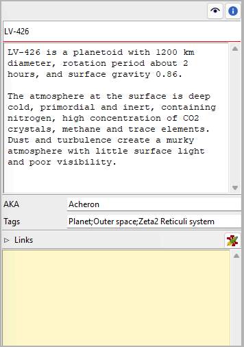

nv_zim
User guide
This page refers to the latest nv_zim release. You can open it with Help > Zim connection Online help.
nv_zim is a plugin that connects novelibre projects with a Zim Desktop Wiki. This is mainly intended for world building documentation.
The plugin adds an Zim Desktop Wiki entry to the novelibre Tools menu,
and a Zim connection Online help entry to the Help menu.
The property views of characters, locations, items, and book
get a  button.
The Toolbar gets a button.
button.
The Toolbar gets a button.
Setting up Zim Desktop Wiki
General
To launch the Zim Desktop Wiki application, nv_zim must know the location of its installation. If you have installed Zim in the default directory, there is nothing to do here.
Note
At program startup, nv_zim checks the launchers.ini file in the novelibre configuration directory. Here is an example with a Windows entry:
[SETTINGS]
.zim = C:/Program Files (x86)/Zim Desktop Wiki/zim.exe
If this file doesn’t exist, or the path doesn’t fit,
the program searches the default installation paths for the 32-bit
and the 64-bit versions under Windows, as well as /usr/bin/zim under Linux.
If this fails, it opens a file selection dialog, asking for the location.
The proper location is then automatically entered in the launchers.ini file.
Zim notebooks as project wikis
The nv_zim plugin extends the novelibre user interface, so you can conveniently launch the Zim Desktop Wiki application with a project-related notebook or a context-related wiki page. Basically, this works with any Zim notebook, even with pages that belong to different notebooks. However, it is recommended to create a notebook called project wiki linked with the current novelibre project, or with multiple projects that belong to a series. Then the program can automatically generate missing pages in this notebook.
File locations
Project wikis may be located anywhere. However, auto-created ones are
put into a subdirectory of the novelibre project, named <project name>_zim.
If you later move the project wiki to another location, the next time you open it from within novelibre you can select it with a file selection dialog and link to it again.
If you move the project wiki to another location together with the novelibre project, the program can automatically correct the wiki links.
Even if you leave the project wiki where it is, but move the novelibre project somewhere else, the program can automatically correct the wiki links.
Notebook structure
Auto-generated project wikis have a “flat” structure, which means: all wiki pages are located in the Zim notebook’s Home folder. Groupings and tree structures can be created using links on appropriately structured overview pages. Compared to a folder structure, this has the advantage that each page can be categorized under several different aspects. If you prefer a hierarchical structure instead, you can subsequently move auto-generated wiki pages with Zim, but you may have to renew the link in novelibre via the selection dialog.
Wiki links in novelibre
novelibre saves the file paths of the project wiki and the wiki pages in the .novx file, if the project is not locked at the time of linking. Otherwise, the program only remembers these file paths for the current session, so as not to change the locked project. However, if you subsequently unlock the project and reopen the wiki or a page, it will automatically save the file paths and display a corresponding message on the status bar.
Tip
If you want to link more than one wiki page with a character, location, item, plot line, or the entire book, you can use regular links. When the nv_zim is installed, novelibre will recognize wiki pages among the links and open them with the Zim application.
Zim Desktop Wiki menu
Open project wiki
With Tools > Zim Desktop Wiki > Open project wiki,
or clicking on the button on the toolbar,
you can open the Zim notebook linked with the project.
If there is no link yet, or if the saved link address is not valid, you will be asked whether you want to open an existing wiki or create a new one:
- Browse
this opens a file picker dialog to search for a Zim wiki file with the extension .zim. Zim is launched with the selected project wiki open.
Note
The selected file will be linked as the project wiki, if the project is not locked. If the project is locked, you can open the project wiki from within novelibre during the current session, but you may have to re-select it in the next session.
- Create
this auto-creates a new blank Zim notebook in a subdirectory of the project directory, and opens it with Zim.
Note
The new .zim file will be linked as the project wiki, if the project is not locked. If the project is locked, you can open the project wiki from within novelibre during the current session, but you may have to re-select it in the next session.
- Cancel
Aborts the operation without launching Zim.
Hint
If you want to open the project wiki or a wiki page from within novelibre, but don’t see any reaction, please take a look at the taskbar and see whether the Zim Desktop Wiki application is already open, but is covered by other open windows, e.g. by novelibre. In this case, the “Zim” window is not automatically lifted to the foreground.
Create project wiki
With Tools > Zim Desktop Wiki > Create project wiki you can create a new Zim notebook in a subdirectory of the project directory and open it with Zim. The generated project wiki contains pages for the book and for all characters, locations, and items. If there is already a Zim notebook in the target directory, this directory is automatically renamed and kept as a backup.
Note
The new .zim file will be linked as the project wiki, if the project is not locked. If the project is locked, you can open the project wiki from within novelibre during the current session, but you may have to re-select it in the next session.
Remove wiki links
With Tools > Zim Desktop Wiki > Remove wiki links you can remove saved wiki links from the project file. This takes effect when saving the next time.
A submenu offers two options:
- Selected pages
This will remove the Zim wiki links of the selected elements. This command only refers to linked pages, but not to the project wiki.
- All
This will remove all Zim wiki links. This command refers both to linked pages and to the project wiki.
Book/Characters/Locations/Items/Plot line properties
 Wiki page button
By clicking on this button you open a linked wiki page with Zim.
If no wiki page is linked yet, the program first tries to find a page in the project wiki whose name matches the title of the book, the plot line, the location or the item, or the full name of the character, if known, otherwise the short name.
If no project wiki has been defined yet, the program first asks for the project wiki and gives you the option of selecting or creating it (see above). You will then be asked whether you want to open an existing wiki page or create a new one:
- Browse
this opens a file picker dialog to search for a Zim page file with the extension .txt. Zim is launched with the selected wiki page open.
Note
The selected file will be linked with the element currently selected in novelibre, if the project is not locked. If the project is locked, you can open the wiki page from within novelibre during the current session, but you may have to re-select it in the next session.
- Create
this auto-creates a new wiki page as a part of the project wiki, and opens it with Zim.
Note
The new .txt file will be linked with the element currently selected in novelibre, if the project is not locked. If the project is locked, you can open the wiki page from within novelibre during the current session, but you may have to re-select it in the next session.
- Cancel
Aborts the operation without launching Zim.
Hint
You can delete the link by renaming or removing the linked note with Zim. After renaming a note, you can restore the link with “Browse”.